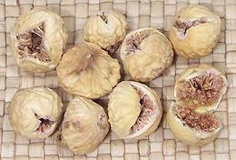

There are at least 850 species in the genus Ficus, almost all tropical trees, shrubs and vines. Only one temperate species, the Common Fig (F. carica) is significant for food. A few others have edible fruit but they are used only locally as "bush food".
The Common Fig is the most commercially important member of the whole mulberry family, and a strange fruit it is. Unlike other mulberries the flowers are inside with a small hole at the end of the fruit through which it's only pollinator, a wasp, can enter. Each species of fig has its own species of wasp and can be pollinated by no other.
The photo specimens are Brown Turkey (2 inch diameter, 2-1/2 ounces), Black Mission (1-1/4 inch diameter, 2 inches long, 7/8 ounce), and green Calimyrna (1-5/8 inch diameter, 1-1/2 inch long, 1 ounce). The very sweet Black Mission and Calimyrna are the two varieties most often found fresh in California. The Brown Turkey is larger with a tougher skin, but is significantly less sweet.
Trees producing edible figs come in female only, so they must be pollinated with pollen from a wild variety (caprifigs) the wasps live in. Branches from the wild caprifig trees are hung in the fig orchards to give the wasps easy access to the fig crop. When the wasps mature they enter and pollinate the edible figs. Any eggs they lay there promptly die because it's the wrong kind of fig. This weird method of cultivation seems to have been going on for at least 6000 years.
Some fig trees produce more than one crop a year. The early crop, on the previous year's wood, is called the "breba" crop and needs no pollination. The second, called the "main" crop forms later on the current year's wood, and may need pollination. There are four basic types of edible fig, each with multiple cultivars:
More on Mulberries.
|

|
The top photo to the left is of dried Shirazi Figs, also known as Persian Figs and Shirazi Anjeer. They are very small at 1 inch diameter and a little less than 1/4 ounce. They are less sweet than the larger figs. Supposedly they are gathered wild in the mountains of Iran, but since Iranian imports are not legal in the U.S. at this time, that is not something I can confirm - they either are from elsewhere or have been "laundered" through a third country. The most important Fig producing areas are Turkey, Egypt, Algeria, Iran and Morocco. Fresh figs are extremely perishable so about 90% of the crop is sold dried. Fresh figs are easily available only around the regions where they are grown. California produces nearly the entire U.S. crop, though it's only about
10% as large as Turkish crop. The major varieties are Black Mission (black
or purple skin, pink inside, fresh or dried), Kadota (greenish yellow
skin, purple inside, used for canned figs), Calimyrna (greenish yellow
skin, pinkish brown inside) which is the favorite drying variety, Brown
Turkey (purplish skin, pink inside) and Adriatic (light green skin, pale
pink inside) from which fig bars and paste are made.
Buying:Here in Southern California fresh black and green figs are easily available in the multi-ethnic produce stores, when in season. Brown Turkey has the longest season, from mid May through December. Calimyrna have the shortest season, from July through September. Some fig growers are happy to ship fresh figs to less fortunate regions of North America.Dried figs are available year round in North America. Most California dried figs go to processors, but some are available in markets. More common are dried figs from Greece and Turkey. Worms used to be a big problem with imported figs, but I haven't seen any for many years. Storing:Fresh figs should be used within a couple of days, as they are subject to mold. Storage can be extended a couple days in the refrigerator, loosely wrapped in paper. Dried figs should be kept in a tightly closed plastic bag or tray, unrefrigerated. They should be used within a couple months as they will get too dry and hard with extensive storage.Cooking:Recipes for fresh figs originate mostly from the Mediterranean region, and from California. Dried figs are most often eaten as a snack, but they are also cooked. Most sauce or salad recipes require dried figs to be chopped and soaked. They are also widely used in baked goods, and contain a natural humectant, a chemical that keeps baked goods moist and extends their shelf life.Links
|